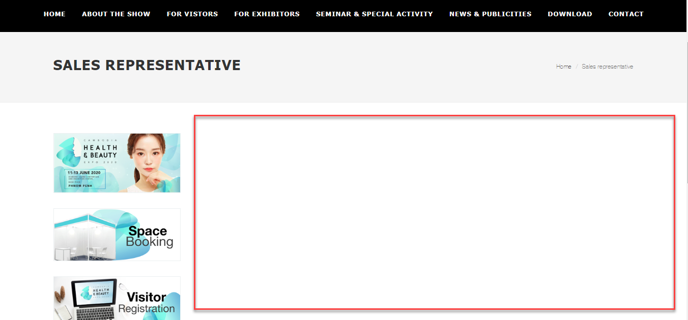
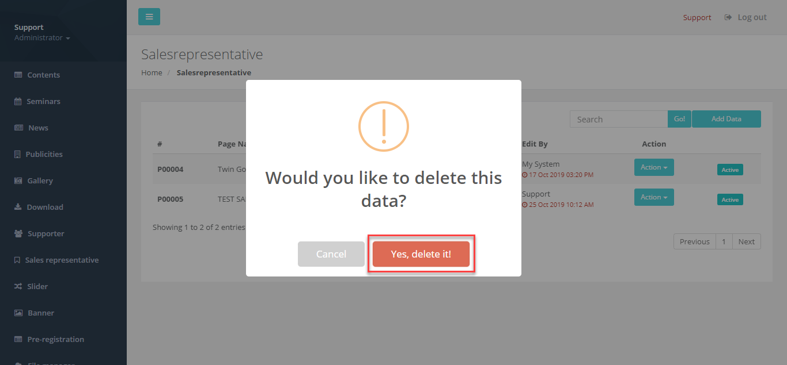

6. Setting
เมนู Setting เป็นหน้าที่ไว้ตั้งค่าเว็บไซต์ และ ข้อมูลไว้ให้ลูกค้าติดต่อกลับของเว็บไซต์ www.st-twin.com แบ่งเป็น 2 เมนูคือ

1. Basic data คือ ข้อมูลพื้นฐาน ประกอบด้วย
1.1 Address คือ ช่องใส่ที่อยู่บริษัท
1.2 Email คือ ช่องใส่ Email
1.3 Tel number คือ ช่องใส่เบอร์โทรศัพท์
1.4 Fax contact คือ ช่องใส่เบอร์โทรสาร
2. Tool คือ เครื่องมือในการค้นหา ประกอบด้วย
2.1 Keyword คือ คีย์เวิร์ดที่เกี่ยวข้องเว็บไซต์ สำหรับเพิ่มการค้นหาใน Google ประมาณ 10 คีย์เวิร์ด และใช้เครื่องหมายคอมม่า (,) คั่นระหว่างคีย์เวิร์ดแต่ละคำ โดยไม่ต้องเว้นวรรคข้างหลังคอมม่า
2.2 Description คือ คำอธิบายที่เกี่ยวกับ Website จะไม่แสดงในเว็บไซต์ แต่จะแสดงที่หน้าการแสดงผลการค้นหาของ Google
2.3 Google tools คือ เป็นบริการฟรีจาก Google ซึ่งเป็นเครื่องมือสำหรับช่วยเหลือผู้ใช้งานทั่วๆไปเพื่อ เพิ่มโอกาสในการแสดงผลที่ดีขึ้น ในผลการค้นหาของ Google
2.4 Google Analytics คือ การเก็บข้อมูลผู้เข้าเยี่ยมชมเว็บไซต์ เพื่อที่จะนำข้อมูลที่ได้ไปวิเคราะห์ปรับปรุงในส่วนงานต่างๆ ไม่ว่าจะเป็นการทำการตลาด การซื้อโฆษณา การปรับเปลี่ยนเว็บไซต์
เมนู Setting คือเมนูที่แสดงในเว็บไซต์ ดังภาพ

Created with the Personal Edition of HelpNDoc: Easily create Qt Help files